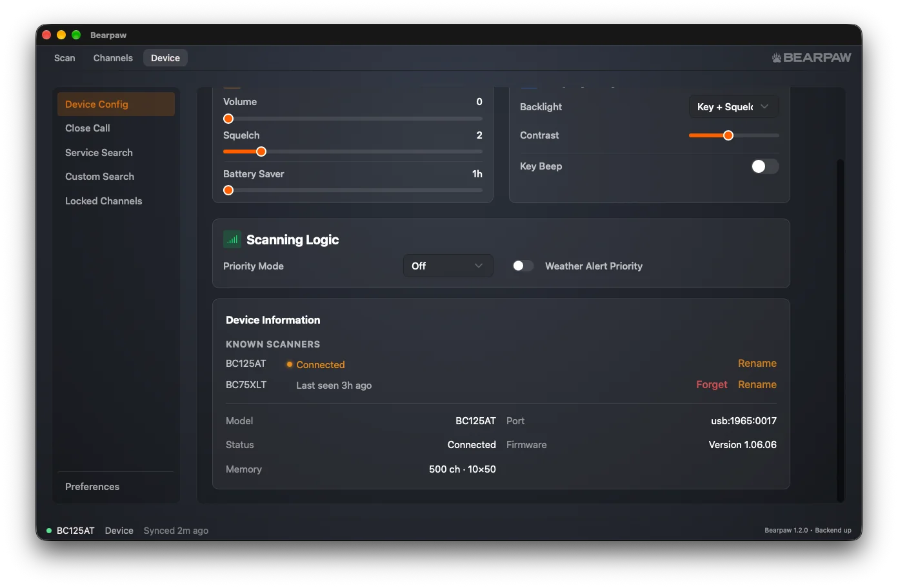

Device Config
The Device Config page holds the scanner's everyday settings, in four cards: audio and power, display and system, scanning logic, and a read-only device-information panel.
Changes to scanner settings apply immediately. There's no Save button. Most changes put the scanner in programming mode to write them, which leaves it on Hold at channel 1 until you switch to Scan or Channels. Volume and Squelch change without stopping the scan. A failed write shows a red error message.

Not every scanner has every setting. Bearpaw only shows controls your scanner can actually accept. On a BC75XLT, Battery Saver, Backlight, Contrast, Key Beep and Weather Alert Priority don't appear — that hardware has no command for them. (It does have a backlight and a key beep; they're controlled on the radio itself, not by software.) If a control below isn't on your Device tab, your scanner doesn't support it.
Audio & Power
- Volume: 0 to 15. The scanner's speaker level.
- Squelch: 0 to 15. The gate that mutes background hiss until a signal is strong enough to break through. Too high and you'll miss weak signals; too low and you'll hear constant static. (See squelch.)
- Battery Saver: 1 to 16 hours. The rechargeable-battery charge time the scanner is set for.
Display & System
- Backlight: when the scanner's screen light comes on. Always On, Always Off, Keypress (on a button press), Squelch (when a signal opens), or Key + Squelch (either).
- Contrast: 1 to 15. The scanner's LCD contrast.
- Key Beep: on or off. Whether the scanner beeps when you press its buttons.
Scanning Logic
- Priority Mode: Off, On, Plus, or DND. Priority scan periodically checks your priority channel even while you're scanning or holding elsewhere, so you don't miss traffic on a channel that matters. DND ("Do Not Disturb") only checks between transmissions, so it won't cut into a call you're already listening to.
- Weather Alert Priority: on or off. Watches for the NOAA weather-service alert tone and interrupts to warn you of severe weather.
Priority modes need a priority channel to watch. If no channel is flagged as priority, the scanner won't engage any of these modes and Bearpaw shows a warning under the dropdown — flag a channel on the Channels page first.
Device Information
The top line names the scanner Bearpaw is using: its model, and the name you gave it, if you did. Under that is read-only information, not settings: the Model, the Port it's on, the connection Status, and the Firmware version. A connection problem shows a diagnostic message here, and a USB issue adds a short troubleshooting checklist.
More than one scanner
Unplug one scanner and plug in another, and Bearpaw finds the new one
within about 15 seconds. You don't need to relaunch, even going
between a BC125AT and a BC75XLT. If your config.yaml
sets a port or a USB ID, Bearpaw only looks there.
When a different scanner connects, Bearpaw throws away any channel edits you haven't uploaded, so they can't land on the wrong radio, and there's no undo. Upload before you swap.
Once you've used more than one, the top line becomes a list of every scanner Bearpaw remembers, each marked Connected or with when it was last seen. Click Rename to give each one a name, like "Base" or "Truck". Save a blank name to clear it.
Forget removes a scanner you don't use anymore. Bearpaw tells you what it will delete before it does: the channels it saved for that scanner, its bank names, and its activity history. (History stays if you have another scanner of the same model, because they share it.) Nothing on the scanner itself changes. The scanner you're using has no Forget button.
Two scanners of the same BC125AT-family model show up as one entry. Every one of them reports the same serial number over USB, so Bearpaw can't tell them apart. To Bearpaw they're one scanner: edits you haven't uploaded and bank names carry over when you swap one for the other. Two BC75XLTs each get their own entry.
Did this help? Your support keeps me building Bearpaw and buys the scanners it learns to work with next. Support Bearpaw